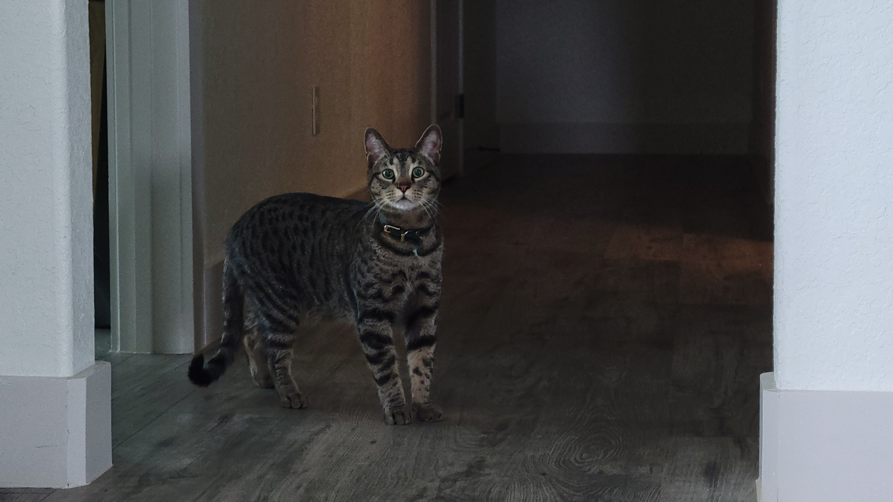
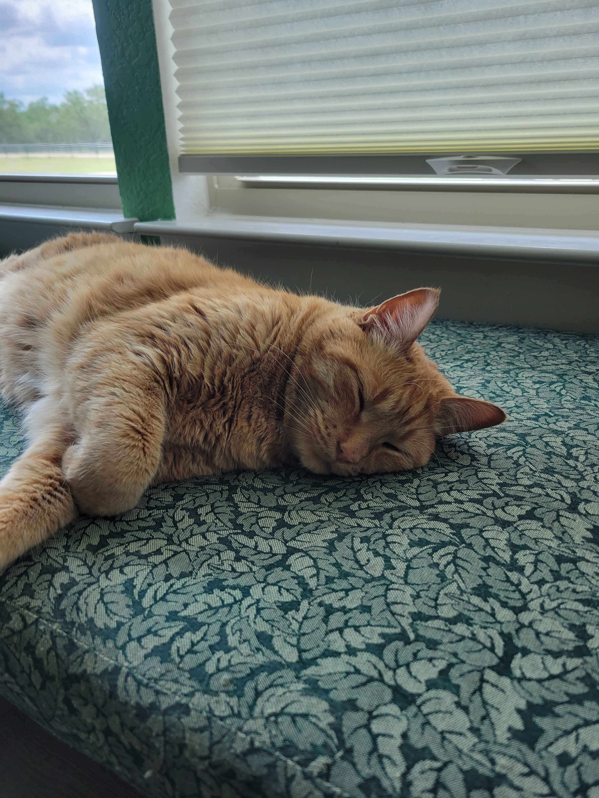

About me
I enjoy talking to new people and try to get along with everyone I meet. I also like to get tattoos and piercings and plan on getting more in the future. Another thing about me is that I love my three cats:

Layla
She is very sweet and affectionate. She loves to eat human food and is curious about trying new things.

Winston
He is very energetic and can be annoying sometimes. Like Layla, he loves to try and eat different kinds of human foods. He like to lay on your back when you're laying on your stomach.

Simba
He is sweet but can be very feisty. While he does like pets, sometimes he will swipe when he's tired of them. Although, he does like to cuddle only on his terms.